**Dynamic Light Interactions: Volumetric Photon Mapping in Realistic Animation**
# Introduction
This project introduces the creation of a sophisticated rendering framework designed to produce highly lifelike animations featuring intricate light phenomena. The adoption of volumetric photon mapping enables precise simulation of light scattering and emission, thereby significantly improving the visual authenticity of the rendered environments. A crucial component of this endeavor involves refining rendering algorithms to effectively balance the computational intensity of volumetric effects and photon mapping with the preservation of image fidelity. The methodology incorporates an environment map emitter enhanced with importance sampling, which markedly optimizes light distribution in settings with sparse illumination sources. Furthermore, parallel rendering strategies are utilized to expedite the rendering workflow, facilitating the generation of superior quality animations within a practical duration.
**Skills:** Advanced Rendering Techniques, Volumetric Photon Mapping, Importance Sampling, Parallel Computing, Path Tracing Algorithms, Shader Development, Scene Composition and Design, Photon Mapping Optimization, Final Gathering Methods, Progressive Photon Mapping.
# Proposed Features
The rendering system encompasses the following functionalities:
- Diverse Light Source Types
- Normal Mapping
- Depth of Field
- Environment Map Emitter with Importance Sampling
- Participating Media Path Tracer
- Photon Mapping, Final Gathering, and Progressive Photon Mapping
- Volumetric Photon Mapping
- Parallel Rendering
## Basic Features
Initial development focused on implementing essential rendering capabilities, which have been iteratively enhanced to ensure reliability and performance.
### Different Light Sources
Incorporating various types of light sources to achieve realistic illumination effects:
- **Beam Light:** Adjusts the cosine range to function as a diffuse light source, posing challenges for material tracers.

- **Projector Light:** Emits color selectively within a valid cosine range and non-zero UV values, enabling the projection of vibrant light patterns onto surfaces.
### Normal Mapping
Utilizing normal mapping techniques enhances surface intricacies without increasing geometric complexity, allowing for detailed and textured appearances.
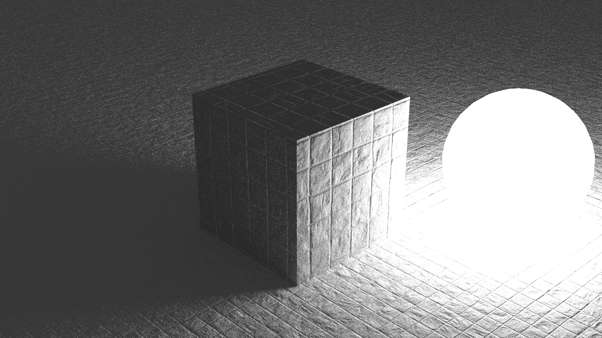
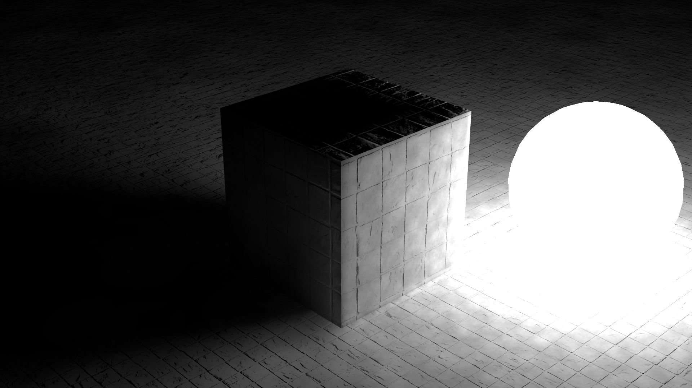
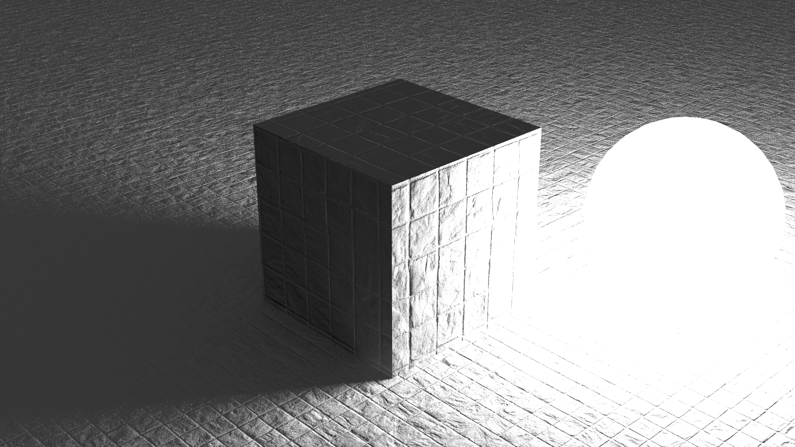
### Depth of Field
Simulating a pinhole camera model combined with aperture-based blurring techniques achieves realistic depth of field effects.
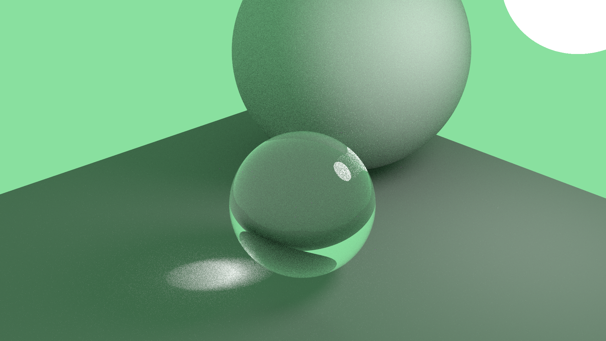
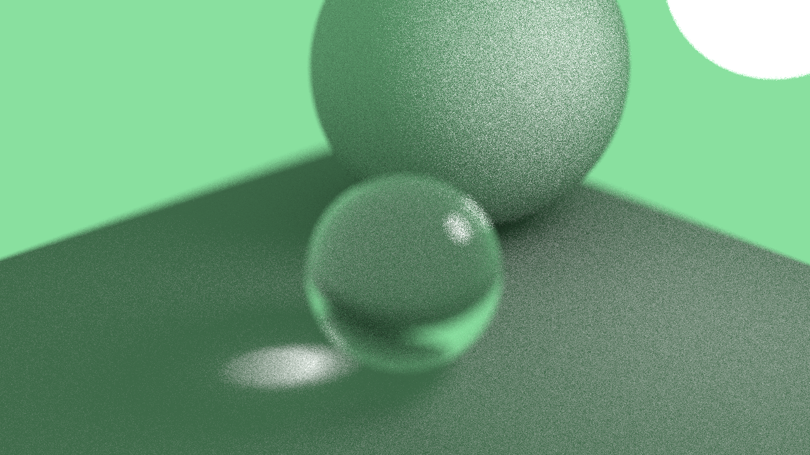
## Advanced Features
### Environment Map Emitter with Importance Sampling
Transforming the background into an emissive surface allows it to function as a light source rather than a static image. Implementing importance sampling on the environment map enhances both the efficiency and accuracy of lighting calculations.


### Participating Media Path Tracer
The path tracer is equipped to handle homogeneous participating media, facilitating realistic volumetric effects such as fog and light scattering within dielectric spheres.

To address the complexity of sampling free flight paths, the medium is initialized within the integrator. Each surface is assigned an internal and external medium. Specular interactions, determined by the condition \( \text{dot}(wi, n) \times \text{dot}(n, wo) > 0 \), indicate potential medium transitions, which are managed by alternating between internal and external media upon intersection.

### Photon Mapping, Final Gather, Progressive Photon Mapping
Surface photon mapping is employed to efficiently manage scenes with limited light sources. This integrator choice allows for effective rendering with a reduced photon count, offering superior speed compared to alternative methods.
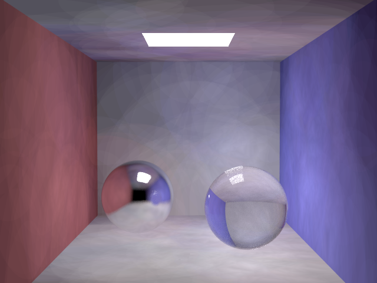
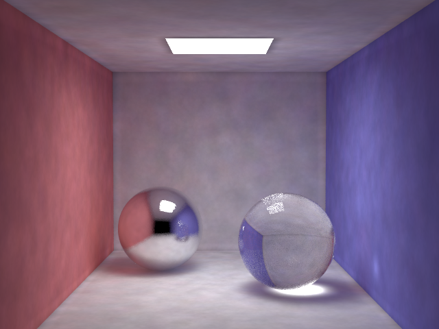
Russian Roulette termination is utilized to ensure uniform distribution of photon power.

Final gathering enhances the quality of photon mapping by introducing controlled noise, thereby refining the illumination details.
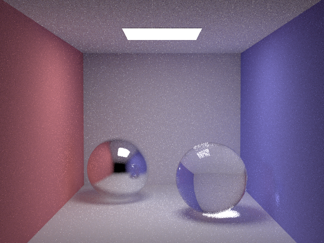
Validation involves rendering a dielectric sphere with an index of refraction (IOR) of 1 to verify transparency by isolating direct and caustic light components.
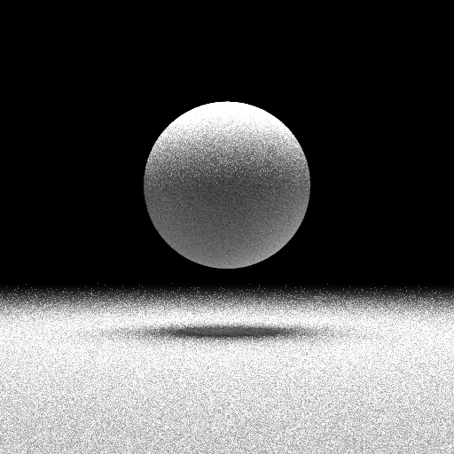
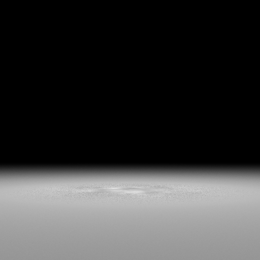
Progressive photon mapping dynamically adjusts the search radius using the following formula:
```cpp
for (int i : range(frame)){
md2 = (i + alpha) / (i + 1.f) * md2;
}
```
### Volumetric Photon Mapping
Implemented via ray marching to accommodate the delicate structures of luminous atmospheric formations. Despite inherent bias, this method proves effective for the specific rendering requirements. Surface and volume photons are traced separately to regulate the distribution of different photon types during the generation phase.
## Scene Design
The rendered environment consists of a sequence of interconnected settings, transitioning from an ice castle to illuminated atmospheric displays, a dragon, a panoramic snow-covered mountain, and ultimately residing within a snowglobe. The camera navigates between exterior and interior scenes, each featuring distinct light sources and objects, necessitating seamless transitions and robust rendering methodologies.
### The Dragon
Normal mapping is utilized to impart intricate details to the dragon model. The depiction of the dragon's fiery breath employs heterogeneous participating media. Due to the complexity of mastering Houdini and converting emitted media to NanoVDB formats within the project timeline, projected lighting is used for heterogeneous media, demonstrating the viability of this approach.

### The Luminous Atmosphere
The geometry of the atmospheric light phenomena is abstracted as a series of vertical light beams emanating from designated points. Manually crafting these emission points allows for greater control over the shape and coloration compared to procedural generation methods.


**Techniques for Atmospheric Light Rendering:**
- Constrained projection of light within a specific volumetric range to maintain linear light paths.
- Single sampling within the volume to prevent external light scattering.
- Direct ray traversal through the volume during surface gathering to ensure transmittance in non-illuminated regions.
- Application of air wall materials to regulate volumetric properties.
- User-defined visibility settings to control light interaction.
### The Ice Castle
Snow accumulation on the ice castle is simulated using Houdini, achieving depth and realism beyond simple normal texture mapping. This approach leverages Houdini's capabilities to create detailed snow-covered surfaces, despite the extensive learning curve required.

### The Snowglobe
The snowglobe scene integrates dual environment maps to represent both interior and exterior lighting conditions. An infinite environment light is unsuitable for the confined space within the snowglobe; therefore, a specialized `BackgroundSurface` is introduced. This spherical ambient light source is limited by radius and adjusted to permit external visibility, ensuring the interior scene remains observable from the outside.
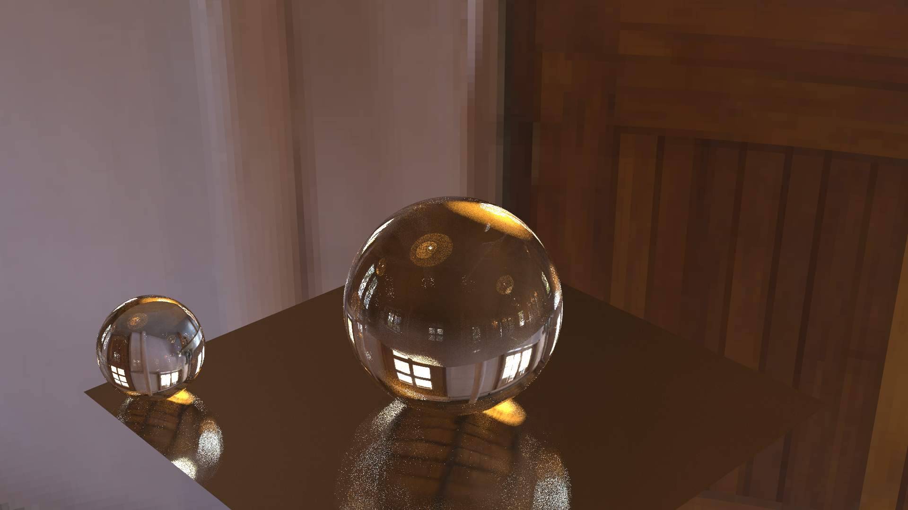
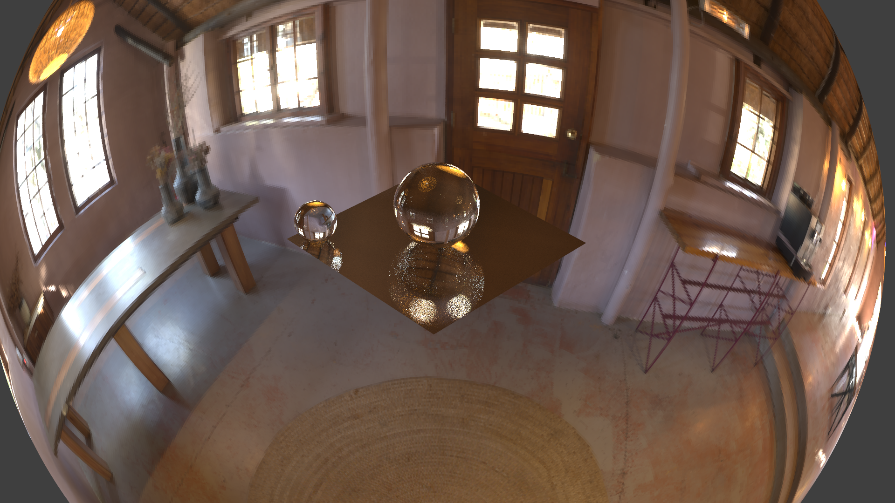


### Scene Series
Animation is achieved by systematically modifying camera parameters stored in a JSON file, enabling frame-by-frame rendering. To efficiently render numerous frames, the process is parallelized using Nanothread. This involves assigning individual threads to generate separate images or perform progressive path tracing with varying radii, thereby optimizing the utilization of computational resources.
# Final Results

# References
Models utilized in this project are sourced from the following platforms:
- [Sketchfab](https://sketchfab.com/)
- [DesignConnected](https://www.designconnected.com/)
- [Free3D](https://free3d.com/)
- [CGTrader](https://www.cgtrader.com/)
- [Poly Haven](https://polyhaven.com/)
- [Clara.io](https://clara.io/)